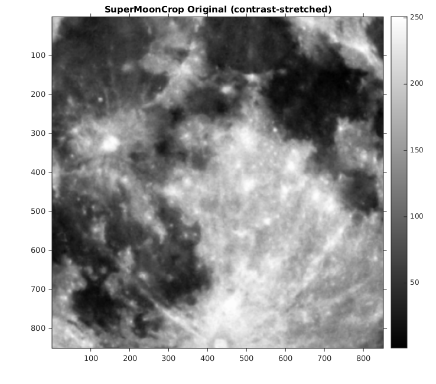

Contents
MyMainScript
tic;
Setting global data
curDir = pwd;
Input files
superMoonCrop_file = fullfile(curDir, '..', 'data', 'superMoonCrop.mat'); lionCrop_file = fullfile(curDir, '..', 'data', 'lionCrop.mat');
Loading inputs
load(superMoonCrop_file);
smcOrig = imageOrig;
load(lionCrop_file);
lcOrig = imageOrig;
% Linear contrast stretch the original images
smcRes = myRescaleIntensities(smcOrig, 0, 1);
lcRes = myRescaleIntensities(lcOrig, 0, 1);
Display input images
Display their linear contrast-stretched version
figure('Name', 'SuperMoonCrop Original (contrast-stretched)'), imshow(smcRes*250, gray(250)), colorbar, truesize; title('SuperMoonCrop Original (contrast-stretched)'); figure('Name', 'LionCrop Original (contrast-stretched)'), imshow(lcRes*250, gray(250)), colorbar, truesize; title('LionCrop Original (contrast-stretched)');
Warning: Image is too big to fit on screen; displaying at 67% Warning: Image is too big to fit on screen; displaying at 67% Warning: Image is too big to fit on screen; displaying at 67% Warning: Image is too big to fit on screen; displaying at 67%
Unsharp masking
smcSharp = myUnsharpMasking(smcOrig, [50 50], 20, 0, 1);
lcSharp = myUnsharpMasking(lcOrig, [30 30], 20, 0, 1);
% Linear contrast stretch the sharpened images
smcSharpRes = myRescaleIntensities(smcSharp, 0, 1);
lcSharpRes = myRescaleIntensities(lcSharp, 0, 1);
Display the sharpened images
figure('Name', 'SuperMoonCrop Sharpened (contrast-stretched)'), imshow(smcSharpRes*250, gray(250)), colorbar, truesize; title('SuperMoonCrop Sharpened (contrast-stretched)') figure('Name', 'LionCrop Sharpened (contrast-stretched)'), imshow(lcSharpRes*250, gray(250)), colorbar, truesize; title('LionCrop Sharpened (contrast-stretched)')
Warning: Image is too big to fit on screen; displaying at 67% Warning: Image is too big to fit on screen; displaying at 67% Warning: Image is too big to fit on screen; displaying at 67% Warning: Image is too big to fit on screen; displaying at 67%
Save the images
out_mat_smc = fullfile(curDir, '..', 'data', 'superMoonCropSharpened.mat'); save(out_mat_smc, 'smcSharpRes'); out_mat_lc = fullfile(curDir, '..', 'data', 'lionCropSharpened.mat'); save(out_mat_lc, 'lcSharpRes'); out_png_smc = fullfile(curDir, '..', 'images', 'superMoonCropSharpened.png'); imwrite(smcSharpRes*250, gray(250), out_png_smc); out_png_lc = fullfile(curDir, '..', 'images', 'lionCropSharpened.png'); imwrite(lcSharpRes*250, gray(250), out_png_lc); toc;
Elapsed time is 21.922623 seconds.